TAssetBundle Manual
TAssetBundle is a powerful, integrated asset bundle management system.
Editions (v5.0+)
TAssetBundle ships in two editions:
- Lite (free) — Core runtime + Manifest/Strategy + incremental build + all editor tools (Browser, Cross-Reference Analyzer, Dependency Checker, Asset Reference Tracker, Catalog Diff) + Play Asset Delivery plugin + full source. The runtime API is
TAssetBundles(low-level handles). - Pro — Lite + the
TAssetBundle.Extensionsmodule:AssetManager(context-based loading with GameObject auto-release),LinkAsset,PrefabPoolManager,PathAliasTable, and the runtime Asset Usage Tracker.
This manual covers both editions. Sections that describe Pro-only features are clearly marked at their headings. If you are using Lite, follow the TAssetBundles examples and skip the AssetManager / PrefabPoolManager / Path Aliases / Asset Usage Tracker sections.
Requirements
- Unity Version: 2021.3 LTS or later
- Supported Platforms: Windows, macOS, iOS, Android, WebGL
Quick Start
Get started with TAssetBundle in 3 steps:
Step 1: Create TAssetBundleManifest
Right-click on a folder containing assets you want to bundle, then select Create > TAssetBundle > TAssetBundleManifest.
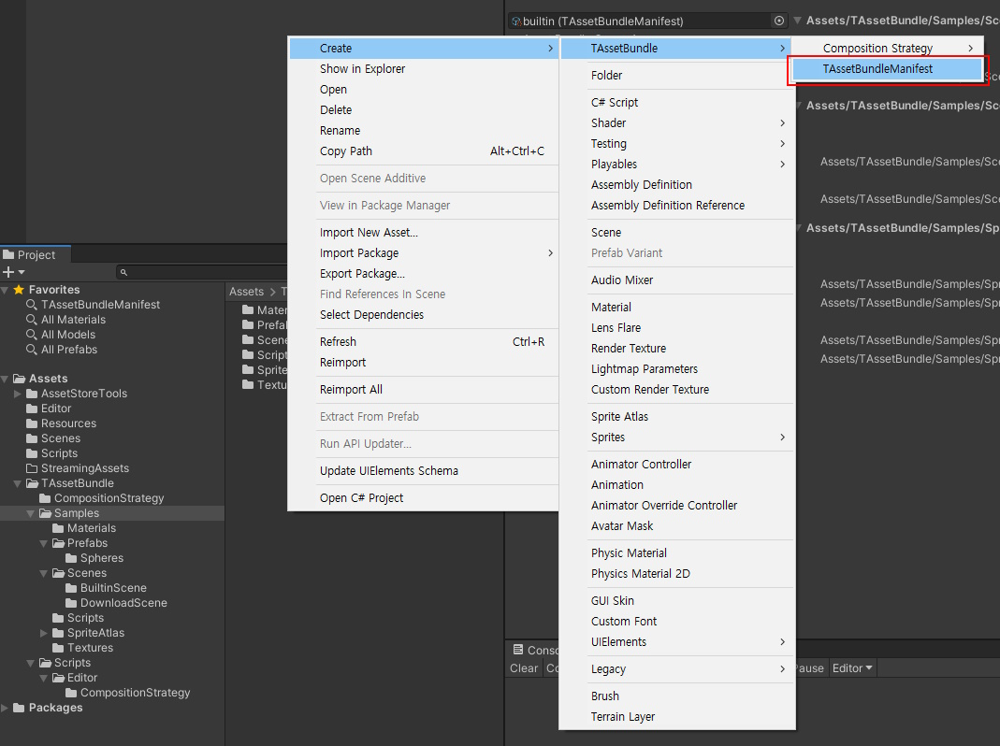
Step 2: Configure and Build
- Select the created TAssetBundleManifest
- Add a composition strategy (e.g., all_together)
- Right-click and select Run Composition Strategy
- Go to TAssetBundle > Build Asset Bundle menu
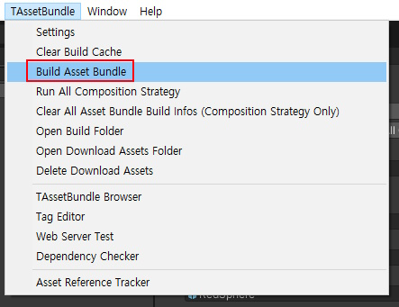
Step 3: Load Assets
Lite — low-level TAssetBundles API (also works in Pro):
using UnityEngine;
using TAssetBundle;
public class QuickStartLite : MonoBehaviour
{
public string spritePath;
async void Start()
{
await TAssetBundles.InitializeAsync().ToTask();
// Load by path — returns a handle
var handle = await TAssetBundles.LoadAssetAsync<Sprite>(spritePath).ToTask();
GetComponent<SpriteRenderer>().sprite = handle.Get();
// Unload when no longer needed
// TAssetBundles.UnloadAsset(handle);
}
}
Pro — high-level AssetManager (auto-released when this GameObject is destroyed):
using UnityEngine;
using TAssetBundle;
using TAssetBundle.Extensions;
public class QuickStartPro : MonoBehaviour
{
public string spritePath;
async void Start()
{
await TAssetBundles.InitializeAsync().ToTask();
// Load and link to this GameObject — auto-released on destroy
AssetManager.LoadAssetAsync<Sprite>(gameObject, spritePath)
.OnCompleted += asset =>
{
GetComponent<SpriteRenderer>().sprite = asset.Get();
};
}
}
That's it! For development, you can also use Editor Asset mode to skip building.
If a catalog file exists but cannot be read (for example it is locked by another process),
InitializeAsyncstill completes. The error and the original exception are logged, and that catalog is treated as missing: a downloaded catalog that cannot be read falls back to the built-in catalog, and with no readable catalog no asset is found. Initialization does not run again after it has completed; callTAssetBundles.LoadCatalogInfoAsync(catalogName)to retry reading the catalog.
Table of Contents
- Core Concept: Manifest
- AssetManager (Recommended)
- TAssetBundles (Low-Level API)
- PrefabPoolManager
- Remote Download
- TAssetBundle Settings
- Building Asset Bundles
- Plugin System
- Editor Tools
- Editor Play Modes
- Sample Materials on URP
Core Concept: Manifest
How Manifests Work
TAssetBundleManifest is the central unit of TAssetBundle.
When you create a TAssetBundleManifest in a folder, every file and subfolder under that folder becomes a managed target of that manifest. The manifest defines how those assets are grouped into AssetBundles.
Runtime code never needs to know about bundle structure. You always load assets by path — which bundle they belong to, how bundles are split, and what the dependencies are is all handled automatically. This means you can freely restructure your bundles at any time without changing a single line of runtime code.
There are two ways to configure bundles:
Auto Configuration — Use built-in CompositionStrategy assets to automatically configure bundles. Several strategies are included by default (all_together, all_separately, regex_match, clear, etc.). Add strategies to the manifest and run them to auto-generate the bundle configuration. Strategies are executed in order, so you can combine them: for example, bundle everything together first, then exclude specific assets.
Manual Configuration — Drag assets directly into the manifest's AssetBundleBuildInfo list to manually define exactly which assets go into which bundle.
Explicit Asset Collection (Lite and Pro)
Settings > Explicit Asset Collection > Excluded Extensions applies the same explicit-root policy to direct registrations, expanded folder leaves and composition-strategy candidates. New settings default to .lighting; legacy settings receive this default once on first load, without a separate approval step. Customized or intentionally empty lists are preserved on subsequent loads and updates. An intentionally empty list is supported; Restore Default Exclusions (.lighting) restores the default. Matching ignores case and accepts extensions with or without a leading dot.
The manifest Ignore Assets list works without a strategy. Ignoring files/folders removes their leaves from final roots without deleting registrations, including managed descendant Ignore entries. The Excluded [N] foldout explains paths and reasons. Compiler inputs and narrowly identified editor authoring objects are not explicit data roots; runtime TextAssets, ScriptableObjects, shaders, lightmap textures, LightingData and NavMesh data are not blanket-excluded.
Excluded from explicit collection; may still be included as a dependency. Unity's scene/lighting dependency closure is preserved; this does not force-strip dependencies or change runtime FilePathCollector patterns. Explicit-root fingerprints invalidate incremental caches even if the dependency union is unchanged (older caches rebuild once). Settings/Undo/Redo/project changes refresh derived search/included caches without dirtying unchanged manifests.
Multiple Manifests per Folder
You can create multiple manifests in the same folder, each with its own bundling strategy. This lets you apply different rules to different subsets of assets within the same directory tree.
For example, in an Assets/Characters/ folder:
- Manifest A — Bundles all textures together (using regex to match
.pngfiles) - Manifest B — Bundles each prefab separately (using file filter on
.prefab)
Per-Manifest Options
Each manifest also controls:
- Builtin — Include bundles in StreamingAssets (shipped with the app, no download needed)
- Encrypt — Encrypt bundle contents for security
- Tags — Categorize bundles for selective downloads (e.g.,
"hd","lang-en","level1")
Creating a Manifest
Right-click on a folder > Create > TAssetBundle > TAssetBundleManifest
Manifest Inspector:
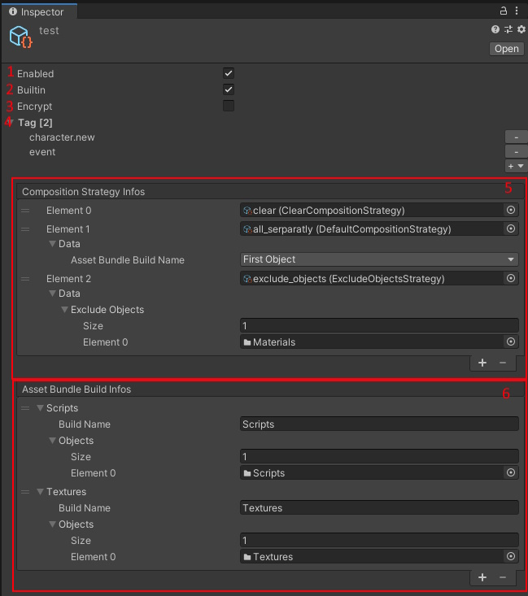
| # | Option | Description |
|---|---|---|
| 1 | Enabled | Include in AssetBundle build target |
| 2 | Built-in | Include AssetBundles in the app |
| 3 | Encrypt | Encrypt the configured AssetBundles |
| 4 | Tags | Set tags for download filtering |
| 5 | Composition Strategies | List of strategies to auto-configure bundles |
| 6 | Asset Bundle Build List | Configured AssetBundle information |
Manual Configuration:
You can manually add assets by clicking Add Asset Bundle Build Info and dragging assets.
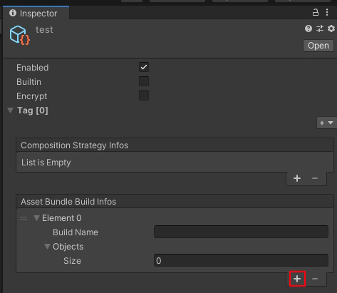
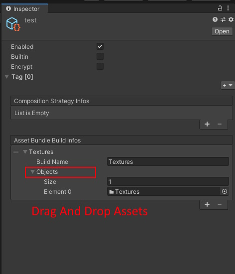
Auto Configuration:
Use composition strategies for automatic configuration. Add a strategy, then right-click the manifest and select Run Composition Strategy.
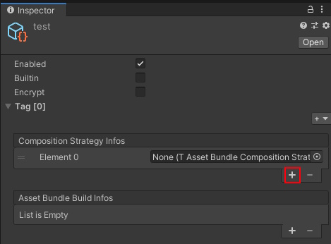
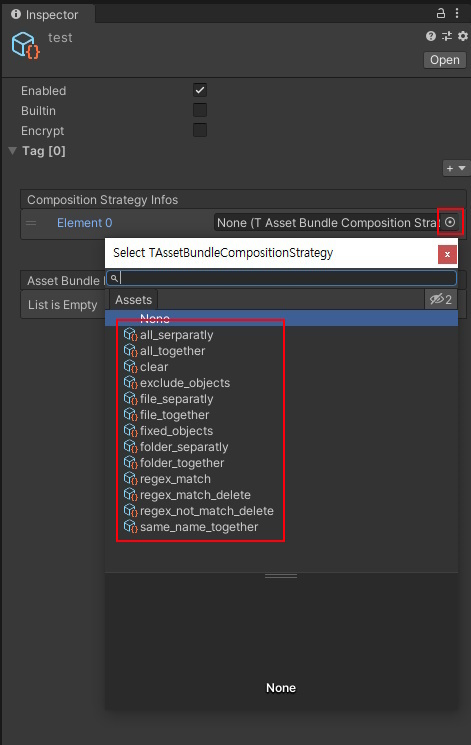
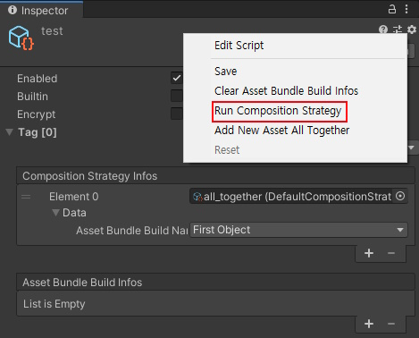
Composition Strategies
Composition strategies automatically configure how assets are grouped into AssetBundles.
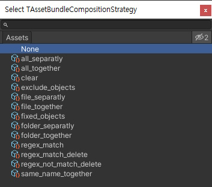
| Strategy | Description |
|---|---|
| all_separately | Add assets as individual asset bundles |
| all_together | Add assets as one asset bundle |
| clear | Clear asset bundle build information |
| exclude_objects | Exclude specific assets from build info |
| file_separately | Add only files as individual asset bundles |
| file_together | Add only files as one asset bundle |
| fixed_objects | Add only specific assets to one asset bundle |
| folder_separately | Add only folders as individual asset bundles |
| folder_together | Add only folders as one asset bundle |
| regex_match | Add assets matching regex to one asset bundle |
| regex_match_delete | Remove build info if filename matches regex |
| regex_not_match_delete | Remove build info if filename doesn't match regex |
| same_name_together | Add assets with same filename as one asset bundle |
You can also create custom strategies by extending TAssetBundleCompositionStrategy<Data>.
AssetManager (Recommended)
Pro edition only.
AssetManagerships in theTAssetBundle.Extensionsmodule, which is included with TAssetBundle Pro. The Lite (free) edition exposes the low-levelTAssetBundlesAPI directly — see the earlier sections of this manual.
AssetManager (in TAssetBundle.Extensions) is the recommended way to load and manage assets. It provides automatic lifecycle management, usage tracking, and prefab pooling in one unified interface.
Context-Based Loading
The key feature of AssetManager is context-based loading. When you pass a GameObject as context, the asset is automatically linked to it. When the GameObject is destroyed, the asset reference is released — no manual cleanup needed. If the GameObject was never active (Unity does not call OnDestroy then), the reference is released by the next UnloadUnusedAssets(), UnloadUnusedAssetsAfterLastUse(), or GetUsingAssets() call.
using UnityEngine;
using UnityEngine.UI;
using TAssetBundle.Extensions;
public class ContextLoadingExample : MonoBehaviour
{
public string spritePath;
void Start()
{
// Load and link to this GameObject
// Asset is automatically released when this GameObject is destroyed
AssetManager.LoadAssetAsync<Sprite>(gameObject, spritePath)
.OnCompleted += asset =>
{
GetComponent<Image>().sprite = asset.Get();
};
}
// No OnDestroy cleanup needed!
}
You can also load with AssetRef for Inspector drag & drop:
[AssetType(typeof(Sprite))]
public AssetRef spriteRef;
void Start()
{
AssetManager.LoadAssetAsync<Sprite>(gameObject, spriteRef)
.OnCompleted += asset =>
{
GetComponent<Image>().sprite = asset.Get();
};
}
Manual Linking
If you need to load without a context first, you can manually link the asset later:
AssetManager.LoadAssetAsync<Sprite>(spritePath).OnCompleted += asset =>
{
image.sprite = asset.Get();
image.LinkAsset(asset); // Manual link — auto-released when image is destroyed
};
Prefab Pooling
AssetManager integrates prefab loading from AssetBundles with automatic pooling:
// Preload a prefab without instantiation
await AssetManager.PreloadPrefabAsync("Assets/Prefabs/Bullet.prefab").ToTask();
// Load and instantiate from pool
var bullet = await AssetManager.GetPrefabAsync("Assets/Prefabs/Bullet.prefab", parent).ToTask();
// Also works with AssetRef
AssetManager.GetPrefabAsync(bulletAssetRef, transform).OnCompleted += go =>
{
// use the instantiated prefab
};
// Return to pool when done (not Destroy!)
bullet.FreePrefab();
// Clear a specific prefab pool
AssetManager.ClearPrefabPool("Assets/Prefabs/Bullet.prefab");
// Clear all prefab pools
AssetManager.ClearPrefabPools();
Unloading Strategies
AssetManager provides multiple unloading strategies:
// Unload all loaded assets (also runs automatically on TAssetBundles.UnloadAll)
AssetManager.UnloadAssetsAll();
// Unload only unused assets (reference count = 0)
AssetManager.UnloadUnusedAssets();
// Unload assets unused for more than N seconds
AssetManager.UnloadUnusedAssetsAfterLastUse(30f);
// Unload a specific asset
AssetManager.UnloadAsset("Assets/Sprites/icon.png");
AssetManager.UnloadAsset(myAssetRef);
Usage Tracking
Query loaded assets and their usage:
// Iterate all assets currently in use
foreach (var asset in AssetManager.GetUsingAssets())
{
Debug.Log($"{asset.AssetPath} — UsageCount: {asset.UsageCount}");
}
// Query a specific asset
if (AssetManager.TryGetAssetInfo("Assets/Sprites/icon.png", out var info))
{
Debug.Log($"Loaded: {info.IsLoaded}, Using: {info.IsUsing}");
}
// Check if any assets are still loading
bool loading = AssetManager.IsLoading();
// Protect an asset from auto-unloading
info.SetDontDestroy(true);
Use the Asset Usage Tracker editor window to visualize these relationships at runtime.
Path Aliases
Path Aliases let you refer to assets by a short, user-facing prefix instead of the full canonical catalog path. Assign a resolver to AssetManager.PathResolver once — every AssetManager API that takes a path string then translates aliases transparently before any catalog lookup or tracking occurs.
Two ways to configure
1. Code — PrefixAliasResolver
using TAssetBundle;
using TAssetBundle.Extensions;
var resolver = new PrefixAliasResolver
{
// Required only when any prefix has more than one folder.
AssetExists = TAssetBundles.ExistAsset,
};
// Single folder — the prefix is replaced by the folder.
// A prefix ending with '/' keeps that '/' after the folder.
resolver.Add("@char/", "Assets/Characters");
// Multiple folders — priority-ordered search path.
// First folder that contains the asset wins (falls back to the first folder
// when AssetExists is not set or no match is found).
resolver.Add("@ui/", new[]
{
"Assets/DLC/UI", // checked first — DLC override
"Assets/Shared/UI", // base fallback
});
AssetManager.PathResolver = resolver;
2. Inspector — PathAliasTable ScriptableObject
Right-click in the Project window and choose Create > TAssetBundle > Path Alias Table. Add entries in the Inspector: each entry has a prefix and one or more folders (drag folders directly from the Project window — FolderAssetRef uses GUID-based serialization).
public PathAliasTable aliasTable; // assign in Inspector
void Start()
{
// BuildResolver() wires AssetExists to TAssetBundles.ExistAsset automatically.
AssetManager.PathResolver = aliasTable.BuildResolver();
}
Loading with aliases
// "@char/hero.prefab" resolves to "Assets/Characters/hero.prefab"
AssetManager.GetPrefabAsync("@char/hero.prefab", parent);
// Works with every AssetManager loading API
AssetManager.LoadAssetAsync<Sprite>(gameObject, "@ui/icons/close.png");
AssetManager.PreloadPrefabAsync("@char/enemy.prefab");
Behavior notes
- Aliases are input-only. Return values,
AssetInfo.AssetPath, event callbacks, and tracking keys all use canonical paths. This keeps logs, usage tracker, and manifest tooling consistent regardless of which alias was used to load the asset. - Longer prefixes match first.
@char/boss/takes precedence over@char/when both are registered — useful for nested namespaces. - Joining. A prefix that ends with
/keeps that/between the folder and the rest of the path, so"@char/"and"@char"both resolve"@char/hero.prefab"to"Assets/Characters/hero.prefab". Any other prefix is replaced by the folder as is. - Caching. Single-folder results are cached. Multi-folder entries check the catalog on every call, so catalogs loaded later (including
LoadCatalogInfoAsync) are used without a manual reset. - Common use cases — DLC overrides (multi-folder priority search) and keeping call sites short when asset folder layouts are deep.
See Sample03_PathAliasTable for a runnable example wiring a PathAliasTable to AssetManager.PathResolver.
TAssetBundles (Low-Level API)
For cases where you need direct control over asset handles, use the TAssetBundles API. You are responsible for manually unloading assets.
Using Asset Path
Load assets using their project path:
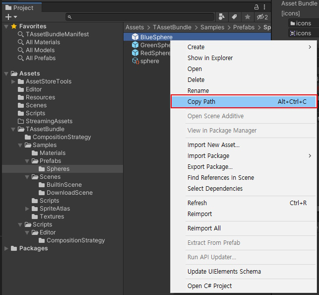
using UnityEngine;
using TAssetBundle;
public class TestLoadAsset : MonoBehaviour
{
public string prefabPath; // Asset Path
void Awake()
{
var loadAsset = TAssetBundles.LoadAssetAsync<GameObject>(prefabPath);
loadAsset.OnComplete += (AssetHandle<GameObject> assetHandle) =>
{
var asset = assetHandle.Get();
Instantiate(asset);
};
}
void OnDestroy()
{
TAssetBundles.UnloadAsset(prefabPath);
}
}
Using Asset Reference
Asset references allow drag-and-drop in the inspector and remain valid even if the asset is moved.
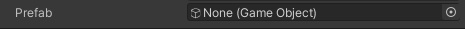
using UnityEngine;
using TAssetBundle;
public class TestLoadAssetReference : MonoBehaviour
{
[AssetType(typeof(GameObject))]
public AssetRef prefab;
private AssetHandle prefabHandle;
void Awake()
{
var loadAsset = TAssetBundles.LoadAssetAsync<GameObject>(prefab);
loadAsset.OnComplete += (AssetHandle<GameObject> assetHandle) =>
{
prefabHandle = assetHandle;
var asset = assetHandle.Get();
Instantiate(asset);
};
}
void OnDestroy()
{
TAssetBundles.UnloadAsset(prefabHandle);
}
}
Unloading Everything (UnloadAll)
TAssetBundles.UnloadAll() unloads every loaded asset and AssetBundle at once (for example between game sessions, or right after UpdateCatalogAsync to apply new content immediately).
- Handles obtained before
UnloadAllrefer to unloaded assets. Releasing them withTAssetBundles.UnloadAsset(handle)is still safe and never affects anything loaded afterwards. - Asset requests that have already started loading complete once as failures (
AssetHandle.IsValid == false). Requests made afterwards start new loads; a new load of the same AssetBundle waits until the canceled one has ended. - A scene request in progress completes once with an error logged and releases its scene bundle. If Unity was already loading the scene itself, Unity may still activate it — unload that scene yourself if it is not wanted.
- In the Editor Asset Mode nothing is destroyed, so requests in progress still succeed there; use the Asset Bundle Mode to test this behavior.
TAssetBundles.OnUnloadedAllis raised afterwards.AssetManagersubscribes to it automatically: all of its entries (including ones marked "Don't Destroy") and prefab pools are dropped, so the nextAssetManagerrequest loads again. Instances already taken out of a pool are not destroyed, but the assets they use are unloaded with their bundles, so spawn them again.
// Drop your own caches of handles or loaded assets when everything is unloaded
TAssetBundles.OnUnloadedAll += () => myIconCache.Clear();
// Apply a catalog update to content that is already loaded
TAssetBundles.UpdateCatalogAsync().OnComplete += updated =>
{
if (updated)
{
TAssetBundles.UnloadAll();
}
};
Without
UnloadAll, assets and AssetBundles that are already loaded keep being used after a catalog update until all their references are released. While such an AssetBundle is still loaded, an asset that the update added to it cannot be loaded (the request fails) until the AssetBundle is released.
PrefabPoolManager
Pro edition only.
PrefabPoolManagerships in theTAssetBundle.Extensionsmodule, which is included with TAssetBundle Pro.
PrefabPoolManager provides standalone prefab pooling — independent of AssetBundles. Use this when you already have a prefab reference and want efficient reuse.
using UnityEngine;
using TAssetBundle.Extensions;
public class PoolExample : MonoBehaviour
{
public GameObject bulletPrefab;
void Start()
{
// Pre-allocate 20 instances
PrefabPoolManager.Reserve(bulletPrefab, 20);
}
void Fire()
{
// Get from pool (creates new if pool is empty)
var bullet = PrefabPoolManager.Get(bulletPrefab, transform);
}
void OnBulletHit(GameObject bullet)
{
// Return to pool instead of destroying
bullet.FreePrefab();
}
void OnDestroy()
{
// Clear the pool
PrefabPoolManager.Clear(bulletPrefab);
}
}
PrefabPoolManager also supports typed components:
public Rigidbody projectilePrefab;
void Fire()
{
var rb = PrefabPoolManager.Get(projectilePrefab, transform);
rb.AddForce(transform.forward * 1000f);
}
Asynchronous Prefab Creation (Pro)
PrefabPool.CreateAsync and PrefabPool.GetOrCreateAsync use Unity's asynchronous instantiation API and are available only when the Extensions assembly defines TASSETBUNDLE_INSTANTIATE_ASYNC: Unity [2022.3.20f1,2023.1) or 2023.3 and later (including Unity 6). They are not compiled for Unity 2021.3, 2023.1, or 2023.2. API reference snapshots generated against Unity 2021.3 therefore do not list these conditional methods.
AssetManager.GetPrefabAsync remains available on older supported Unity versions for asynchronous prefab loading; its name does not mean that Unity's asynchronous instantiation APIs are available. The standalone PrefabPoolManager.Get and Reserve methods shown above instantiate synchronously.
Remote Download
Download AssetBundles from a remote server.
Download Flow:
- Check for Catalog Update
- Update the Catalog
- Get the Download Size
- Download the Assets
using UnityEngine;
using UnityEngine.UI;
using TAssetBundle;
public class RemoteDownloadExample : MonoBehaviour
{
public string remoteDownloadUrl;
public Text statusText;
private void Awake()
{
// [BuildTarget] is replaced with actual platform
TAssetBundles.SetRemoteUrl(remoteDownloadUrl);
}
private void OnGUI()
{
if (GUILayout.Button("Check Catalog Update"))
{
TAssetBundles.CheckCatalogUpdateAsync().OnComplete += result =>
{
statusText.text = "Need update: " + result;
};
}
if (GUILayout.Button("Update Catalog"))
{
TAssetBundles.UpdateCatalogAsync().OnComplete += result =>
{
statusText.text = "Update result: " + result;
};
}
if (GUILayout.Button("Get Download Size"))
{
TAssetBundles.GetDownloadSizeAsync().OnComplete += size =>
{
statusText.text = "Size: " + FileSizeFormatter.FormatSize(size);
};
}
if (GUILayout.Button("Download All"))
{
var download = TAssetBundles.DownloadAsync();
download.OnProgress += info =>
{
double percent = info.DownloadedSize / (double)info.TotalDownloadSize * 100;
statusText.text = $"Downloading: {percent:0.0}%";
};
download.OnComplete += info =>
{
statusText.text = info.IsDownloadComplete() ? "Complete!" : "Failed";
};
}
}
}
When an update or a download fails:
UpdateCatalogAsyncreturnsfalsewhen there is nothing to update (the catalog is up to date, or the remote hash cannot be fetched), and when the catalog cannot be downloaded, cannot be read (corrupted, or built with other catalog settings) or cannot be saved. In these cases the catalog in use and the catalog saved on the device stay as they were, also after a restart, andOnCatalogLoadedis not raised. (This does not cover the app being killed or the device losing power while the catalog file is being replaced, or a failure of the operating system's file replace itself.)TAssetBundles.GetLastWebRequestError()holds the network or save error. CallingUpdateCatalogAsyncagain retries.- On
truethe new catalog replaces the current one within the same frame, so requests made during the update are always served by one of the two catalogs. AssetBundles that are already loaded keep being used (see Unloading Everything). - A download is complete only when every AssetBundle could be stored (
IsDownloadComplete()). A failed AssetBundle hasstate == Failedand anError; calling the download again fetches only what is still missing. With the separately managed cache (encrypted AssetBundles, WebGL, or Use Unity Remote AssetBundle Provider off) this includes a response that is not a valid AssetBundle or could not be written to the cache. A file enters this cache only once it is completely written, so a write interrupted by an error or by the app being closed is downloaded again (a power loss during the write is not covered).
Starting without a remote URL:
AssetBundles that are already cached load without a remote URL; the URL is needed only to fetch what is missing. An app can start from its saved catalog and cache before it knows the server address (for example when the address comes from your own backend), and set the URL only when something has to be downloaded.
- Without a remote URL, loading a remote AssetBundle uses only the cache and sends no remote HTTP request. An AssetBundle that is not cached fails at once, like any AssetBundle that cannot be loaded; loading never downloads for the separately managed cache, with or without a URL.
- This is not a guarantee of zero HTTP requests from the app. In WebGL,
buildIncludeAssetBundle = Allalso makes the local provider checkStreamingAssets/TA/<name>_<hash>on the page host, independently of the remote URL; a file that is not included can produce an HTTP 404. With the defaultBuiltinOnly, non-builtin AssetBundles do not cause these local-provider checks (included builtin AssetBundles still use the page host). The cache-only remote load does not contact the remote server; other providers and app code can still use the network. GetDownloadSize*counts only the AssetBundles that are not cached, with or without a URL.- A download that has AssetBundles to fetch from the remote URL fails without sending a request: each of those AssetBundles is
FailedwithError.errorType == EUnityWebRequestErrorResult.RemoteUrlNotSet, andIsDownloadComplete()isfalse(earlier versions returned an empty result withtrue). When nothing needs to be fetched the result is empty and complete, as before.GetLastWebRequestError()is not changed, since no request was made. - The remote URL is saved on the device. A saved empty URL counts as not set, so the next start uses
defaultRemoteUrlagain: to start without a URL, callTAssetBundles.SetRemoteUrl("")beforeInitializeAsyncon every start. - AssetBundles handled by a plugin provider (such as Play Asset Delivery) are left out of the download result without a URL, as before: a pack that is not installed yet is fetched by that provider. This includes such AssetBundles whose hash changed in a catalog update, although those do need the remote URL — a load shows whether they are available.
ExistAssetfor every path plus a download size of 0 means the files are in the cache, not that they can be read: a damaged file, or one removed from the cache in the meantime, shows up only as a failed load. Treat a failed load as "needs the server": set the URL, download, and load again.- On a first install the cache is empty, so the address for the first download has to come from outside the AssetBundles (
defaultRemoteUrlor your own code). - Play Asset Delivery packs are fetched by Google Play (on-demand packs use the network even without a remote URL).
IEnumerator Boot(string[] startPaths)
{
TAssetBundles.SetRemoteUrl(""); // start from the cache only
yield return TAssetBundles.InitializeAsync();
long size = -1;
TAssetBundles.GetDownloadSizeByAssetsAsync(startPaths).OnComplete += s => size = s;
yield return new WaitUntil(() => size >= 0);
// A path missing from the catalog also has a download size of 0, so check it too.
bool ready = size == 0 && startPaths.All(TAssetBundles.ExistAsset);
if (!ready)
{
TAssetBundles.SetRemoteUrl(GetContentUrl()); // your code: default or from your backend
AssetBundleDownloadInfo info = null;
TAssetBundles.DownloadByAssetsAsync(startPaths).OnComplete += i => info = i;
yield return new WaitUntil(() => info != null);
if (!info.IsDownloadComplete())
{
// info.downloads[i].state == Failed, info.downloads[i].Error: network, HTTP, cache write or RemoteUrlNotSet
}
}
// Load; if a load still fails, set the URL, download and load again.
}
Updating content on the server:
By default AssetBundle files are requested by name ({RemoteUrl}/{name}{extension}), without their hash, and the catalog decides which version is expected. If a new build overwrites the files of the previous one at the same URL, a device that still uses the previous catalog (its update failed, it is offline when checking, or the CDN still serves the old catalog) downloads new AssetBundle files under the previous version. They are cached as the previous version and can be combined with other previous-version AssetBundles already in the cache. The catalog cannot detect this: it records a hash for each AssetBundle but no checksum of the file content.
There are two ways to avoid it: file names with the hash (below), or a separate folder per build.
File names with the hash (Remote File Name With Hash):
Turn on Remote File Name With Hash in the settings (off by default). Each build then also writes every AssetBundle as {name}_{hash}{extension} next to {name}{extension} in the output folder (same bytes), and the catalog it writes makes the runtime request {RemoteUrl}/{name}_{hash}{extension}. A device that still uses the previous catalog requests the previous hashed files, so it does not receive a newer file under an older version - as long as a published hashed file is never replaced.
- The runtime follows the catalog, not the settings of the app: each AssetBundle is requested the way its own catalog was built. A catalog built without the option, or by an earlier version (it has no such field), requests the plain names as before. With several catalogs, each follows its own.
- The cache is not affected: AssetBundles cached before the option was turned on (or with it off) stay cached and are not downloaded again. Turning the option on or off changes the catalog file once (devices download the catalog again, not the AssetBundles), and it does not invalidate the build cache (no rebuild). The first build after updating TAssetBundle changes the catalog file once in the same way, since the catalog now also stores the value (false when off).
- A hashed file that is not on the server fails the download (HTTP 404). The runtime never falls back to the plain name.
- A custom catalog serializer must write and read the
remoteFileNameWithHashfield ofAssetCatalog. The build fails when the serializer loses it (the saved catalog is read back to check). A serializer in the app that drops the field makes that app request the plain names. - The hash in the file name is not a content check: nothing verifies that the file under a hashed name holds that version. Never replace a published hashed file.
- Apps built with a version before this option, and devices that can still use a catalog built without it (a built-in catalog of an app that shipped without the option, or a catalog saved before the switch), request the plain names. As long as such apps or catalogs are in use, keep uploading the plain files with every build, as before. With Builtin AssetBundles Use Separate Folder, the plain files of built-in AssetBundles are in the separate
…Builtinfolder (their hashed files stay in the output folder); upload them to the same relative path on the server. Stopping the plain uploads, or removing them, is your decision once no such app or catalog is in use; leaving outdated plain files on the server while old apps read them is the worst case (they get mixed versions as described above).
Publishing and keeping files (TAssetBundle does not upload or delete anything on your server):
- Upload the new
*_{hash}{extension}files. Skip names that already exist on the server; never overwrite them. - If apps or catalogs that use the plain names are still in use, upload the plain files (overwriting, as before).
- Upload the catalog (
{catalogName}{catalogExtension}). - Upload
{catalogName}.hashlast.
This order keeps the update signal (.hash) from appearing before the files it points to. It is not atomic and not a guarantee: CDN propagation or caching can still show a device an older catalog or hash for a while (for example, the catalog is downloaded again later), and this option does not change that.
The output folder holds only the current build; the server has to keep the hashed files of earlier builds. Do not mirror the output folder to the server with deletion (for example sync --delete): that removes the files earlier catalogs still request. Keep every hashed file referenced by any catalog a device may still use - remote catalogs published during your support period and the built-in catalogs of app versions you still support. Clean up only files outside that set.
A separate folder per build (below) also works with this option: the hashed names do not replace the folder, and a catalog that can reach a folder needs its hashed files there.
Validation scope of this option: Windows editor, Unity 2021.3.45f2 and 2022.3.62f2, StandaloneWindows64, both remote providers, a local HTTP test server. Also validated on one Samsung SM-G955N (Android 9, ARM64 IL2CPP, Unity 6000.3.18f1) using a device-local HTTP server with both remote providers. This does not cover PAD, real CDNs, or all Android devices; iOS and WebGL players remain unverified for this option. Other editor platforms and other Unity versions are not verified.
A separate folder per build:
Do not overwrite a published build:
- Upload every build to its own folder (for example
https://cdn.example.com/builds/42/[BuildTarget]) and keep older folders while devices may still use them. Upload all files of a build before devices are pointed at it. - Set
defaultRemoteUrlof each app version to the folder of the build whose catalog ships in that app. - To move devices to a newer build, call
TAssetBundles.SetRemoteUrl(newFolder)and thenUpdateCatalogAsync(). If it returnsfalse, callSetRemoteUrl(previousFolder)again: the catalog in use is still the previous one, and its AssetBundles must come from its own folder. The remote URL is saved on the device (PlayerPrefs), so store the folder of the last successful update yourself and set it again at startup before loading remote content.
void UpdateToBuild(string newFolder)
{
var previousFolder = PlayerPrefs.GetString("MyGame.ContentFolder", defaultFolder);
TAssetBundles.SetRemoteUrl(newFolder);
TAssetBundles.UpdateCatalogAsync().OnComplete += updated =>
{
if (updated)
{
PlayerPrefs.SetString("MyGame.ContentFolder", newFolder);
PlayerPrefs.Save();
}
else
{
// Keep loading the content of the catalog that is still in use from its own folder.
TAssetBundles.SetRemoteUrl(previousFolder);
}
};
}
Download by Tags:
// Get size for specific tags
TAssetBundles.GetDownloadSizeByTagsAsync(new[] { "character", "level1" });
// Download specific tags
TAssetBundles.DownloadByTagsAsync(new[] { "character" });
Download by Assets:
// Download specific assets
TAssetBundles.DownloadByAssetsAsync(new AssetRef[] { myAssetRef });
Download by Scenes:
// Download scenes
TAssetBundles.DownloadByScenesAsync(new[] { "MyScene" });
Device Cache Cleanup
This is a Core feature shared by Lite and Pro. The methods return TAsyncOperation<CacheClearResult>:
| Method | Selection |
|---|---|
ClearCacheByTagsAsync(string[]) |
Tags, using the current TagComparer |
ClearCacheByAssetsAsync(string[]) / ClearCacheByAssetsAsync(AssetRef[]) |
Asset paths / references |
ClearCacheByScenesAsync(string[]) / ClearCacheByScenesAsync(SceneAssetRef[]) |
Scene names or paths / references |
ClearUnusedCacheAsync() |
Old versions absent from current and temporary catalogs |
TAssetBundles.ClearCacheByAssetsAsync(new[] { "Assets/Levels/Level1.prefab" }).OnComplete += result =>
{
Debug.Log($"Removed {result.DeletedCount}; managed-file bytes {result.DeletedFileBytes}");
foreach (var entry in result.Skipped)
Debug.Log($"Kept {entry.AssetBundleName} ({entry.Hash}): {entry.Reason}");
};
Selected cleanup includes old hashes and unneeded dependencies; there is no dependency-inclusion option. It waits for Core downloads and performs deletion without yielding. Loaded/loading names are skipped (InUse). The exact dependency versions required by another cached, built-in, or conservatively retained provider bundle remain (RequiredByCachedAssetBundle); a deletion failure (DeleteFailed) also retains dependencies. Unity cache entries are cleared by exact cache name and hash, with same-name aliases handled together. Empty cache names are unsupported (UnsupportedCacheEntry).
DeletedCount counts removed Unity versions and managed files. DeletedFileBytes counts managed files only, not Unity cache bytes. EditorAsset mode returns an empty result immediately. Only names in loaded current/temporary catalogs are inspected: unloaded catalogs and bundle names removed from all loaded catalogs are not reclaimed. Built-in files are not deleted. Existing disk-space automatic cleanup is unchanged; its in-use protection is outside this API's scope.
TAssetBundle Settings
Access via TAssetBundle > Settings menu.
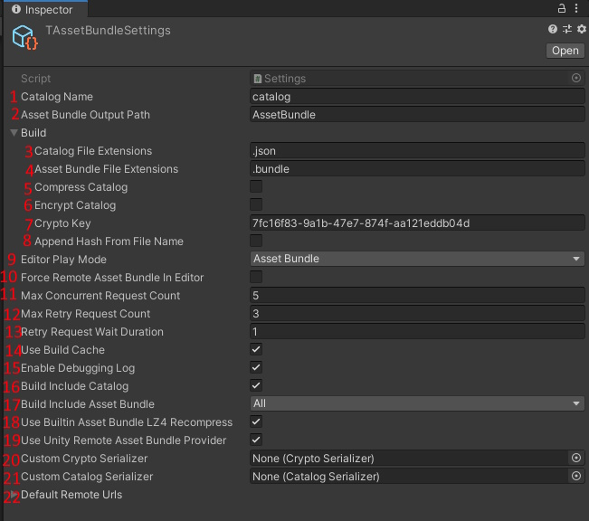
| # | Setting | Description |
|---|---|---|
| 1 | Catalog Name | Name of the catalog file |
| 2 | Output Folder | AssetBundle build output folder; relative to the project, or a Windows drive-absolute path (see below) |
| 3 | Catalog Extension | Catalog file extension |
| 4 | Bundle Extension | AssetBundle file extension |
| 5 | Compress Catalog | Enable catalog compression |
| 6 | Encrypt Catalog | Enable catalog encryption |
| 7 | Encryption Key | Key for encryption |
| 8 | Append Hash | Add hash to asset bundle filename |
| 9 | Editor Play Mode | Asset loading mode in editor |
| 10 | Force Remote Only | Force remote AssetBundles in editor |
| 11 | Max Concurrent Requests | Maximum concurrent web requests |
| 12 | Max Retry Count | Maximum web request retries |
| 13 | Retry Wait Duration | Wait time between retries |
| 14 | Use Build Cache | Only build changed AssetBundles |
| 15 | Debug Log | Enable debug logging |
| 16 | Include Catalog | Include catalog in app |
| 17 | Embed Method | How to embed AssetBundles |
| 18 | Recompress to LZ4 | Recompress built-in bundles to LZ4 |
| 19 | Use Unity Provider | Use UnityRemoteAssetBundleProvider |
| 20 | Custom Catalog Serializer | Custom catalog serializer |
| 21 | Custom Crypto Serializer | Custom crypto serializer |
| 22 | Default Remote URL | Default remote download URL, used at startup when no non-empty URL was saved with SetRemoteUrl |
| — | Explicit Asset Collection > Excluded Extensions (ExcludedExtensions) |
Case-insensitive explicit-root exclusions; defaults to .lighting. See Excluded Extensions. |
Remote File Name With Hash (below Builtin AssetBundles Use Separate Folder, off by default): the build also writes {name}_{hash}{extension} copies and the catalog makes the runtime request them. Build only - the runtime reads the value from the catalog. See Updating content on the server.
Excluded Extensions
Excluded from explicit collection; may still be included as a dependency. ExcludedExtensions affects direct registrations, folder leaves and composition-strategy candidates, not Unity's dependency closure. Extensions may include or omit the leading dot. Legacy settings receive .lighting once on first load; subsequent updates preserve customized and intentionally empty lists. Restore Default Exclusions (.lighting) restores the default. See Explicit Asset Collection for Ignore Assets and cache behavior.
Building Asset Bundles
Output folder and editor copies
Relative output paths retain their existing layout: AssetBundle produces AssetBundle/<target> and the editor's local bundle copy remains in EditorRuntimeAssetBundle/<target>. Do not use relative paths containing parent-directory traversal (..): the existing relative-path contract can resolve the output and editor-copy directories to the same location, and the builder replaces the editor-copy target directory. This change does not alter that legacy behavior.
On Windows, a drive-absolute output path such as D:\Builds\Out (or D:/Builds/Out, including a trailing separator) produces deployment files in D:/Builds/Out/<target>. The editor reads the catalog from that output, but keeps its local bundle copies inside the project, at EditorRuntime/Drive/D/Builds/Out/<target>. These copies are not added to the deployment output. Different drives are kept separate.
With Remote File Name With Hash, the output folder has a {name}_{hash}{extension} copy of every AssetBundle of the catalog next to {name}{extension}, including built-in AssetBundles whose plain file moved to the separate …Builtin folder. The build cache keeps the plain names only, and the editor copies and the files added to the app keep their existing names; the hashed copies are made again by every build (also when all AssetBundles come from the build cache).
Exclude the generated project EditorRuntime/ directory from version control, in addition to your existing editor-copy directories. Each build replaces only the selected output's editor-copy target directory. Changing Output Folder does not remove copies left by previous settings; clearing the build cache does not remove these copies either. Do not place unrelated files in generated output or editor-copy target directories, or nest one output inside another output's target directory.
Validation scope: Windows editor, Unity 2021.3.45f2 and 2022.3.62f2, StandaloneWindows64, relative and Windows drive-absolute outputs. UNC inputs map separately to EditorRuntime/UNC/<server>/<share>/.../<target>, but actual network-share I/O is unverified. macOS/Linux execution, paths over 260 characters, other build targets (including Android), and drive-root output are not verified by this change. Windows root-relative (\Out), drive-relative (D:Out), and extended/device (\\?\...) paths are outside this supported path contract.
Build command
After configuring your manifests, build AssetBundles via TAssetBundle > Build Asset Bundle menu.
Build Features:
- Incremental Build: Only changed bundles are rebuilt (when Build Cache is enabled). The cache tracks file hashes (MD5) and propagates changes through the full dependency graph — both forward and reverse.
- Automatic Dependency Management: Dependencies between bundles are handled automatically
- Cross-Platform: Build for any supported platform
Plugin System
TAssetBundle supports a plugin architecture for extending its functionality. Plugins can hook into:
- Build Pipeline — Add custom build steps (e.g., copying bundles to asset packs)
- Runtime Loading — Provide custom asset bundle loading providers
- Inspector UI — Add per-manifest configuration UI
Plugins are implemented as ScriptableObject assets (PluginBase) with associated plugin modules (PluginModuleBase<T>) discovered via the [PluginModule] attribute.
👉 Plugin Development Guide — step-by-step guide to building your own plugin, with module interfaces, per-manifest data, and execution order.
Included Plugin: Play Asset Delivery
The Play Asset Delivery plugin demonstrates the plugin system. It integrates Google Play's asset pack system for Android AAB builds, allowing bundles to be delivered via install-time, fast-follow, or on-demand delivery. See the TAssetBundlePlugins/PlayAssetDelivery/ folder for details.
Editor Tools
TAssetBundle Browser
A unified view of all manifests and bundles. Access via TAssetBundle > TAssetBundle Browser.
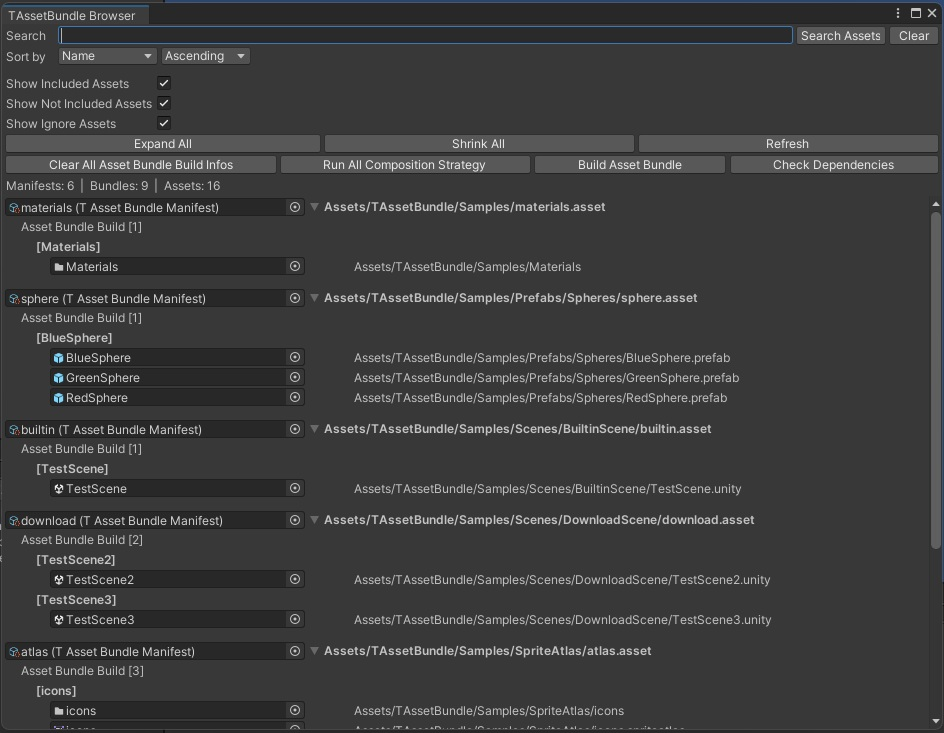
Features:
- Search: Filter manifests by name, or search assets across all manifests
- Sort: Sort by Name, Bundle Count, or Asset Count
- Show Options: Toggle included, not included, or ignored assets
Toolbar Actions:
| Button | Description |
|---|---|
| Clear All Asset Bundle Build Infos | Remove all bundle configurations |
| Run All Composition Strategy | Execute strategies on all manifests |
| Build Asset Bundle | Build all configured bundles |
| Check Dependencies | Analyze bundle dependencies |
TAssetBundle Menu
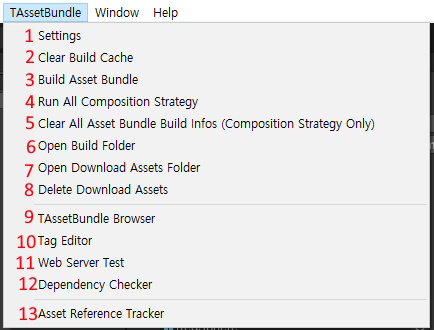
| # | Menu Item | Description |
|---|---|---|
| 1 | Settings | Open TAssetBundle Settings |
| 2 | Clear Build Cache | Remove build cache for current platform |
| 3 | Build Asset Bundle | Build AssetBundles |
| 4 | Run All Composition Strategy | Run strategies on all manifests |
| 5 | Clear All Composition Strategy | Clear all manifest build info |
| 6 | Open Build Folder | Open build output folder |
| 7 | Open Cache Folder | Open downloaded assets cache folder |
| 8 | Clear Cached Assets | Remove downloaded asset cache |
| 9 | TAssetBundle Browser | Open browser window |
| 10 | Tag Editor | Open tag editor |
| 11 | Web Server Test | Open web server test window |
| 12 | Catalog Diff | Compare two catalogs and list changed bundles |
| 13 | Dependency Checker | Check AssetBundle dependencies |
| 14 | Asset Reference Tracker | Track active assets at runtime |
Catalog Diff
Compare two asset catalogs and see exactly which bundles changed between them. Useful before shipping a content update — you can confirm that only the bundles you expected were rebuilt, and check how much the download size moved.
Access via TAssetBundle > Catalog Diff.
Usage:
- Catalog A (current) is prefilled with the catalog of the active build target, if it exists. Catalog B (comparison target) is remembered from your last comparison; use Browse to pick either one.
- Press Compare. The diff is reported in the
B → Adirection, so B is treated as the older catalog and A as the newer one.
What it shows:
- Catalog Info — a
B → Acomparison of the catalog header (TAssetBundle version, catalog version, build number, bundle version, MD5 hash, file size). Values that differ are shown in bold. - Added / Removed / Modified / Unchanged sections — each bundle is grouped by its diff state, with a count per section. Toggle sections with the filter checkboxes and narrow the list with the search field.
- Per-bundle detail — expand a bundle row to see its hash transition (Modified) and the individual asset paths that were added or removed. Each asset and the manifest that owns the bundle are shown as ObjectFields, so you can click through to them in the Project window.
- Size summary — per-bundle size delta for Modified bundles, total size for Added/Removed bundles.
Warnings:
The window warns you when a comparison is likely to be misleading:
- The two catalogs report different
catalogVersionvalues (schema mismatch). - The two catalog paths appear to belong to different build targets (for example, comparing an Android catalog against a StandaloneWindows64 one).
Asset Usage Tracker
Pro edition only. This editor window depends on
AssetManagerbookkeeping and ships with theTAssetBundle.Extensionsmodule. The Lite edition includes the runtime Asset Reference Tracker (underTAssetBundle > Asset Reference Tracker) which shows currently loaded assets; Usage Tracker adds GameObject-level visibility on top.
Track which GameObjects are using which assets during play mode. This works with AssetManager's context-based loading and LinkAsset.
Access via TAssetBundle > Extensions > Asset Usage Tracker.
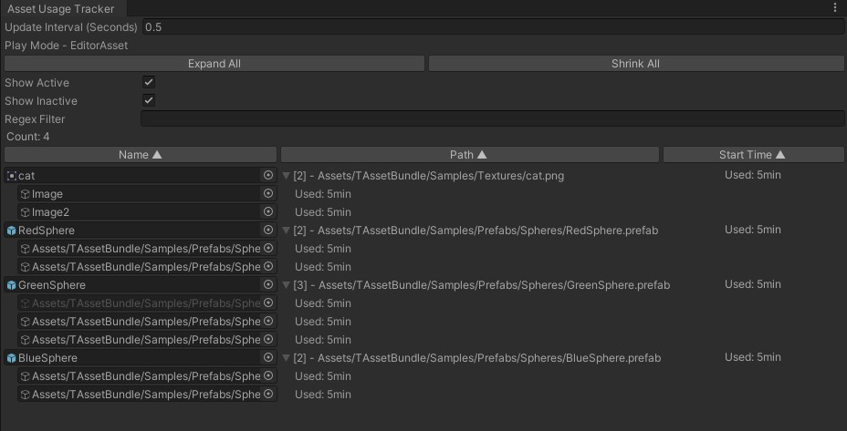
Features:
- View assets in use, with the number of linked GameObjects and how long each asset has been loaded
- View the GameObjects linked to each asset, and how long each link has been held
- Show Active / Show Inactive filters, sort by name, path, or load time, and regex search
- Find GameObjects that still hold assets you expected to be released
Editor Play Modes
TAssetBundle supports two play modes in the editor:
Editor Asset Mode (Development)
Load assets directly without building AssetBundles. Fast iteration during development.
- Go to TAssetBundle > Settings
- Set Editor Play Mode to Editor Asset
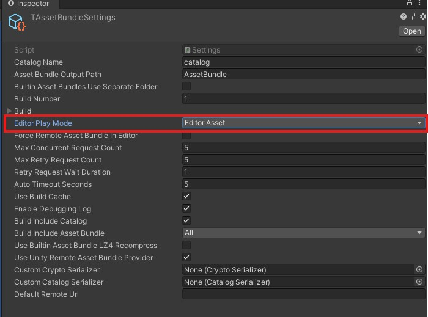
Asset Bundle Mode (Testing)
Load assets from built AssetBundles. Test production behavior.
- Build your AssetBundles first
- Go to TAssetBundle > Settings
- Set Editor Play Mode to Asset Bundle
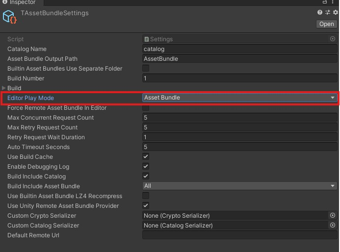
Sample Materials on URP
The bundled samples include materials that use Built-in render pipeline shaders. New Unity 6 projects default to URP, where those shaders are not compatible — sample meshes render as pink. This is a one-time project-wide fix:
- Open Window > Rendering > Render Pipeline Converter.
- Select Built-in to URP (or Built-in to HDRP for HDRP projects) in the dropdown.
- Check Material Shader Converter.
- Click Initialize Converters to scan, then Convert Assets to apply.
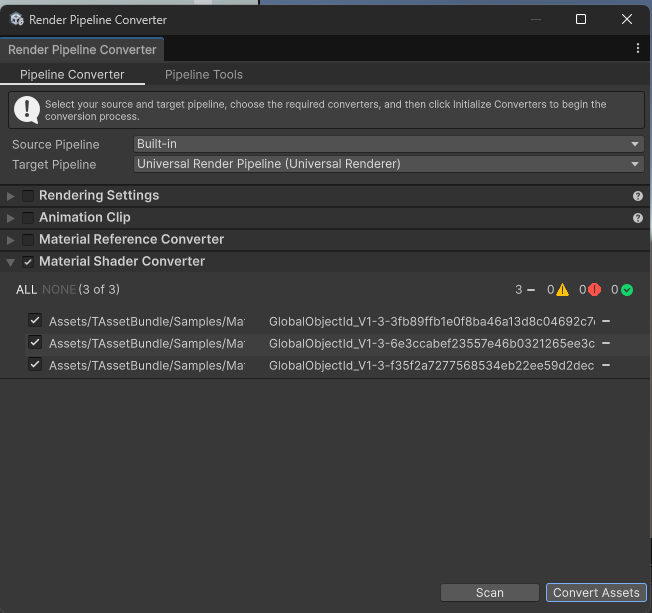
The converter rewrites the materials in place; the samples then render correctly under your project's render pipeline.